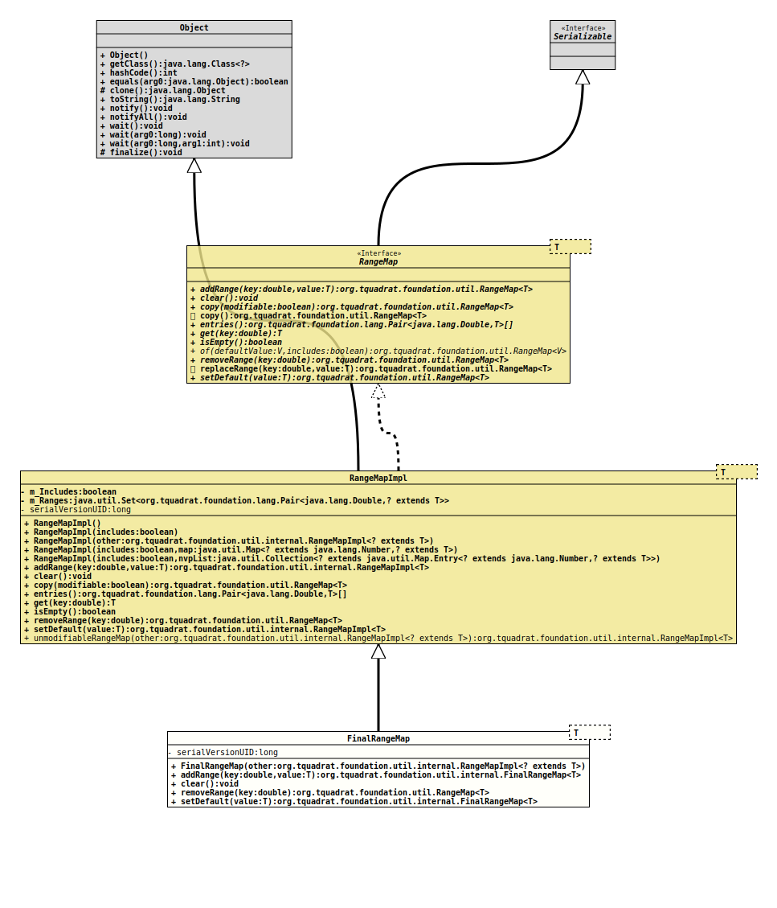

Module org.tquadrat.foundation.util
Class FinalRangeMap<T>
java.lang.Object
org.tquadrat.foundation.util.internal.RangeMapImpl<T>
org.tquadrat.foundation.util.internal.FinalRangeMap<T>
- Type Parameters:
T- The type of the mapped value.
- All Implemented Interfaces:
Serializable,RangeMap<T>
@ClassVersion(sourceVersion="$Id: FinalRangeMap.java 995 2022-01-23 01:09:35Z tquadrat $")
@API(status=STABLE,
since="0.0.7")
public final class FinalRangeMap<T>
extends RangeMapImpl<T>
An implementation of
RangeMap that does not allow changes.- Author:
- Thomas Thrien (thomas.thrien@tquadrat.org)
- Version:
- $Id: FinalRangeMap.java 995 2022-01-23 01:09:35Z tquadrat $
- Since:
- 0.0.7
- See Also:
- UML Diagram
-

UML Diagram for "org.tquadrat.foundation.util.internal.FinalRangeMap"
{kind=link}
-
Constructor Summary
ConstructorsConstructorDescriptionFinalRangeMap(RangeMapImpl<? extends T> other) Creates a newFinalRangeMapinstance from the given instance ofRangeMap. -
Method Summary
Modifier and TypeMethodDescriptionfinal FinalRangeMap<T>This method will always throw anUnsupportedOperationException.final voidclear()This method will always throw anUnsupportedOperationException.removeRange(double key) This method will always throw anUnsupportedOperationException.final FinalRangeMap<T>setDefault(T defaultValue) This method will always throw anUnsupportedOperationException.Methods inherited from class org.tquadrat.foundation.util.internal.RangeMapImpl
copy, entries, get, isEmpty, unmodifiableRangeMapMethods inherited from class java.lang.Object
clone, equals, finalize, getClass, hashCode, notify, notifyAll, toString, wait, wait, waitMethods inherited from interface org.tquadrat.foundation.util.RangeMap
copy, replaceRange
-
Constructor Details
-
FinalRangeMap
Creates a newFinalRangeMapinstance from the given instance ofRangeMap.- Parameters:
other- The otherRangeMapImpl.
-
-
Method Details
-
addRange
This method will always throw anUnsupportedOperationException. -
clear
This method will always throw anUnsupportedOperationException. -
removeRange
This method will always throw anUnsupportedOperationException.- Specified by:
removeRangein interfaceRangeMap<T>- Overrides:
removeRangein classRangeMapImpl<T>- Parameters:
key- The key for the range to remove.- Returns:
- A reference to this range map instance.
-
setDefault
This method will always throw anUnsupportedOperationException.- Specified by:
setDefaultin interfaceRangeMap<T>- Overrides:
setDefaultin classRangeMapImpl<T>- Parameters:
defaultValue- The mapped value.- Returns:
- A reference to this range map instance.
- See Also:
-